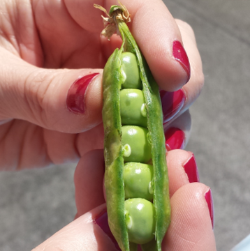

Zucchine

Coltivare in terreno molto ricco di materia organica e non coltivare dopo Solanacce o piante della stessa famiglia delle cucurbitacce.
- Varietà: Zucchina chiara di Faenza
- Periodo di semina: Marzo/Aprile
- Primo raccolto: Fine Aprile
- Ultimo raccolto: Fine Luglio
-
Raccolto
Dimensione Quantità Piccole ( 10cm) 16 Medie (11-16cm) 26 Grandi(>16cm) 9 51
Piselli

American Wonder: Varietà media precoce come ciclo colturale
Consigli
- Piantare in semenzaio riscaldato.
È importante:- Acquistare vasetti biodegradabili (di coco o di cartone)
- Mantenere areato il semenzaio per evitare muffe
- Non usare il coperchio del semenzaio
- Non usare mettere il semenzaio vicino al termosifone
- Fissare i sostegni nel terreno non appena le piantine raggiungono i 10cm
- Acquistare una rete con spazi di non oiù di 10cm per garantire i sostegni adeguati